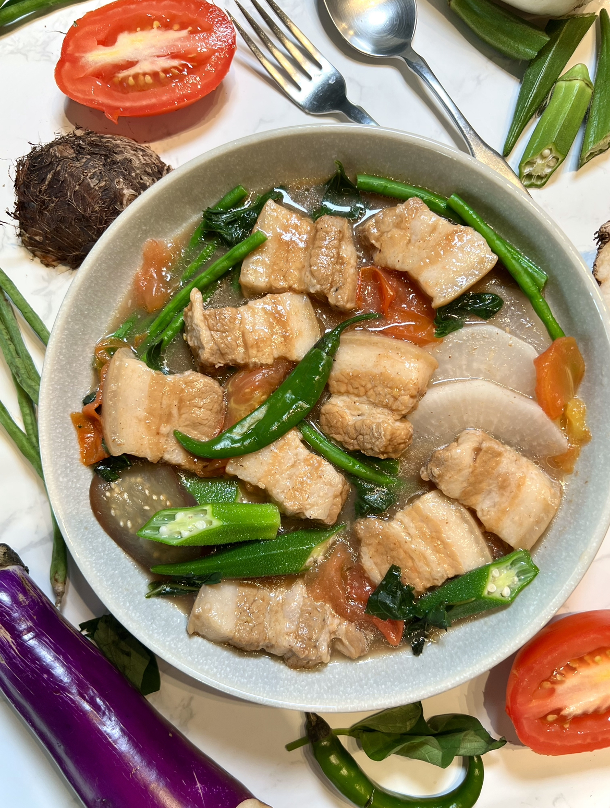
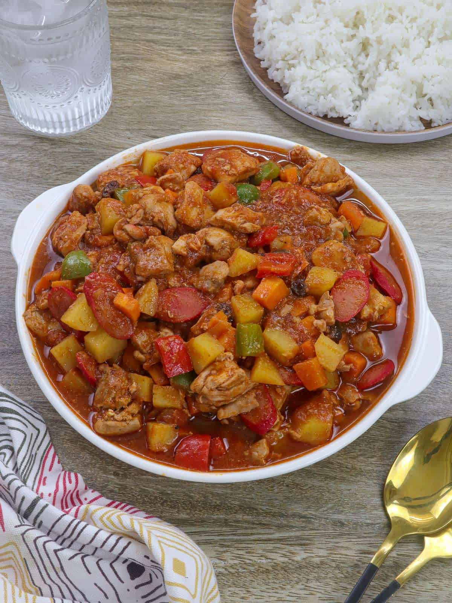
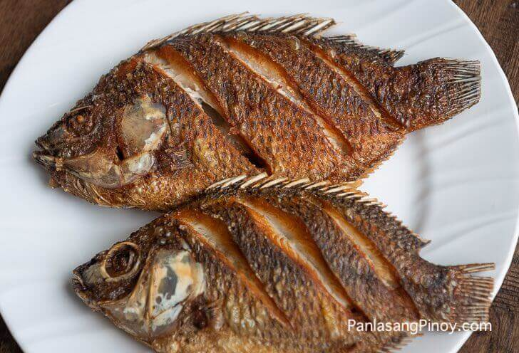

Barnedo's Canteen
Home
About
Menu
Reviews
Contact Us
Login
Soups and Specialties
A rich beef marrow soup slow-cooked to perfection. - ₱90
Tender beef stew served with garlic rice and soup. - ₱50
A comforting noodle soup with savory broth. - ₱40
A comforting noodle soup with egg and beef. - ₱50

A sour soup made with vegetables and pork. - ₱70
Boiled pork served mostly for lunch and dinner. - ₱65
Tapsilogs
A classic Filipino breakfast with beef tapa, garlic rice, and egg. - ₱90
Crispy fried chicken served with garlic rice and egg. - ₱75
Sweet and savory longganisa with garlic rice and egg. - ₱55
A sliced pork belly fried with garlic rice and egg. - ₱90
Salty preserved luncheon with garlic rice and egg. - ₱60
A common filipino fish fried with garlic rice and egg. - ₱75
Lutong Ulam

A rich tomato-based pork stew with vegetables. - ₱65
Chicken stewed in soy sauce, vinegar, and garlic. - ₱65
Spicy pork dish cooked in coconut milk and chili. - ₱65

A tilapia that is deep fried complemented with sauces. - ₱60
Made with ground pork shaped into balls drenched in a tomato braised sauce. - ₱60
A flat beef dish marinated in a typical soy cause, calamansi, and topped with onion - ₱65